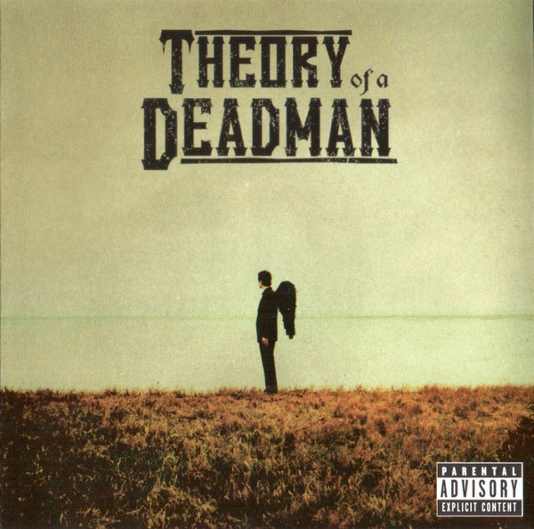

CD
Theory Of A Deadman
Theory Of A Deadman
Media: VG+ · Sleeve: VG+
—
Available
Discogs SuggestedCA$9.30
Discogs MedianCA$9.30
Discogs HighCA$9.30
- Physical Copy ID
- BB-CD-3003
- Year
- 2002
- Label
- 604 Records, Universal Music
- Catalog #
- 253960001 2, 253960001 2
- Country
- CACanada
- Genre / Style
- Rock · Alternative Rock, Hard Rock
9